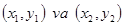

|
Kiritish, chiqarish va o'zlashtirish operatoriga oid masalalar
Begin1. Kvadratning tomoni a berilgan. Uning perimetri aniqlansin. .
Begin2. Kvadratning tomoni a berilgan. Uning yuzasi aniqlansin. .
Begin3. To`g`ri to`rtburchakning tomonlari a va b berilgan. Uning yuzasi S = a * b; va P = 2 * (a + b) perimetri aniqlansin.
Begin4. Aylananing diametri d berilgan. Uning uzunligi aniqlansin .
Begin5. Kubning yon tomoni a berilgan. Uning hajmini  va to`la sirti aniqlansin. va to`la sirti aniqlansin.
Begin6. Paralelepepidning tomonlari a, b, c berilgan. Uning hajmini va to’la sirti aniqlansin.
Begin7. Doiraning radiusi R berilgan. Uning uzunligi L va yuzasi S aniqlansin.
Begin8. Ikkita son a va b berilgan. Ularning o`rta arifmetigi aniqlansin.
Begin9. Ikkita manfiy bo`lmagan son a va b berilgan. Ularning o`rta geometrigi aniqlansin.
Begin10. Nolga teng bo`lmagan ikkita son berilgan. Ularning yig`indisini, ko’paytmasini va har birining kvadrati aniqlansin.
Begin11. Nolga teng bo`lmagan ikkita son berilgan. Ularning yig`indisini, ko’paytmasini va har birining moduli aniqlansin.
Begin12. To`gri uchburchakning katetlari a va b berilgan. Uning gipotenuzasi c va perimetri P aniqlansin.
Begin13. Umumiy markazga bo`lgan ikkita aylana radiusi berilgan.
Ularnig yuzalari va , ularning ayirmasi aniqlansin.
 , , ; , , ;
Begin14. Aylananing uzunligi L berilgan. Uning radiusi R va yuzasi S aniqlansin ,
Begin15. Aylananing yuzasi S berilgan. Uning diametri d va radiusi R aniqlansin ,
Begin16. Sonlar o`qida ikkita nuqta orasidagi masofa aniqlansin.
Begin17. Sonlar o`qida A, B, C nuqtalar berilgan. AC va BC kesmalarning uzunligini va kesmalar uzunligining yig`indisini topuvchi programma tuzilsin.
Begin18. Sonlar o`qida A, B, C nuqtalar berilgan. C nuqta A va B nuqtalar orasida joylashgan. AC va BC kesmalar uzunligining ko`paytmasini toping.
Begin19. To`g`ri to`rtburchakning qarama–qarshi uchlari koordinatlari berilgan. Uning tomonlari koordinata o`qiga parallel. To`g`ri to`rtburchakning perimetri va yuzasi aniqlansin.
Begin20. Tekislikdagi berilgan ikki nuqta orasidagi masofa topilsin.
Begin21. Uchburchakning uchta tomoni uchlari koordinatlari berilgan . Ikki nuqta orasidagi masofani topish Begin20 da berilgan. Uchburchakning yuzasini va perimatrini toping. ,
Begin22. Berilgan A va B sonlarining qiymatlarini almashtiring. A va B ning yangi qiymati ekranga chiqarilsin.
Begin23. A, B va C sonlari berilgan. A ni qiymati B ga, B ni qiymati C ga va C ni qiymati A ga almashtirilsin. A, B va C ning yangi qiymatilari ekranga chiqarilsin.
Begin24. A, B va C sonlari berilgan. A ni qiymati C ga, C ni qiymati B ga va B ni qiymati A ga almashtirilsin. A, B va C ning yangi qiymatilari ekranga chiqarilsin.
Begin25. x ning qiymati berilganda funksiyaning qiymati aniqlansin.
Begin26. x ning qiymati berilganda funksiyaning qiymati aniqlansin.
Begin27. A soni berilgan. A ning darajalarini aniqlovchi programma tuzilsin.
Begin28. A soni berilgan. A ning darajalarini aniqlovchi programma tuzilsin.
Begin29.  burchak gradusda berilgan . Berilgan burchakning qiymatini radianga o`tkazuvchi programma tuzilsin. burchak gradusda berilgan . Berilgan burchakning qiymatini radianga o`tkazuvchi programma tuzilsin.
Begin30. burchak radianda berilgan . Berilgan burchakning qiymatini gradusga o`tkazuvchi programma tuzilsin.
Begin31. Temperatura Farengeytda berilgan. Temperatura qiymatini gradus selsiyga o`tkazuvchi programma tuzilsin.
Begin32. Temperatura gradus Selsiyda berilgan. Temperatura qiymatini Farengeytga o`tkazuvchi programma tuzilsin.
Begin33. X kg konfet A so`m turadi. 1 kg va Y kg konfet qancha turishini aniqlovchi programma tuzilsin.
Begin34. X kg shokolad A so`m turadi va Y kg konfet B so`m turadi. 1 kg shokolad 1 kg konfetdan qancha qimmat turishini aniqlovchi programma tuzilsin.
Begin35. Qayiqning tezligi , daryo oqimining tezligi , . Qayiqning daryo oqimi bo`yicha harakatlanish vaqti  , oqimga qarshi . Qayiqni yurgan S yo`lini aniqlovchi programma tuzilsin. , oqimga qarshi . Qayiqni yurgan S yo`lini aniqlovchi programma tuzilsin.
Begin36. Birinchi avtomabilning tezligi , ikkinchisiniki , ular orasidagi masofa S. Ular biri–biridan uzoqlasha boshlasa T vaqtdan keyin ular orasidagi masofani aniqlaydigan programma tuzilsin.
Begin37. Birinchi avtomabilning tezligi , ikkinchisiniki , ular orasidagi masofa S. Ular biri–biri tomonga harakatlana boshlasa T vaqtdan keyin ular orasidagi masofani aniqlaydigan programma tuzilsin.
Begin38. A va B koeffisentlari berilgan, chiziqli tenglamaning yechimini (x ni) aniqlaydigan programma tuzilsin.
Begin39. A, B, C koeffisentlari berilgan, kvadrat tenglamaning diskriminanti noldan katta bo`lsa uning yechimlarini aniqlaydigan programma tuzilsin. ; ; ;
Begin40. koeffisentlari berilgan, chiziqli tenglamalar sistemasi yechimlarini aniqlaydigan programma tuzilsin.
; ; ;
|